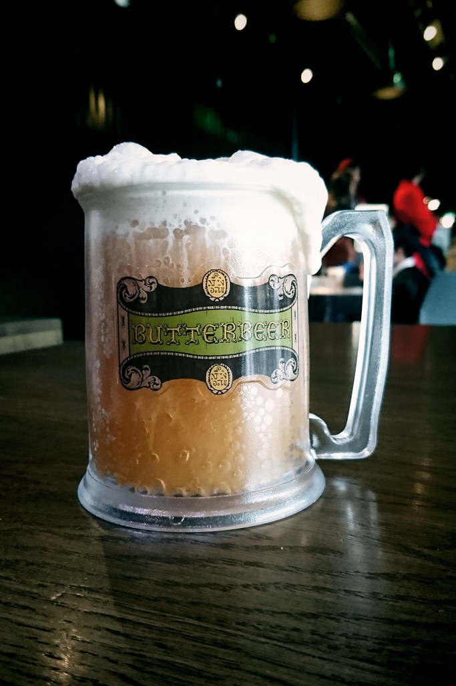

Butter Beer Recipe
Ingredients
1 c. Brown Sugar
1/2 tsp. Salt
2 TBL. Water
1/2 tsp. Cider Vinegar
6 TBL. Butter
3/4 c. Heavy Cream, divided
1/2 tsp. Rum Extract
4-8 12 oz. Cans of Cream Soda
Instructions
In a small saucepan over med heat, combine the brown sugar and water. Bring to a gentle boil and cook, stirring often, until the mixture reads 240 F. on a candy thermometer. Stir in the butter, salt, vinegar and 1/4 heavy cream. Set aside to cool to room temperature. Once the mixture has cooled, stir in the rum extract. In a med bowl, combine 2 TBL. of the brown sugar mixture and the remaining 1/2 c. of heavy cream. Use and electric mixer to beat until just thickened, but not completely whipped, about 2-3 min. To serve, divide the brown sugar mixture between 4-8 tall glasses, (about 1/4 c. for each glass, or less). Add 1/4 c. of cream soda to each glass, then stir to combine. Fill each glass nearly to the top with additional cream soda, then spoon the whipped topping over each. *My family has found that the 1/4 c. of brown sugar mix is too much for our family. We do about half, maybe a little more. We have also found that the name brand sodas have WAY to much sugar added and therefore are too sweet. Use an off brand if you can or one that has a slightly less sugary taste.